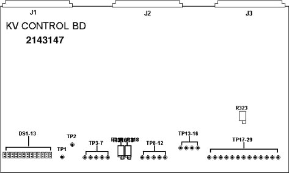

Operating Documentation
Direction 5114043-800, Rev# 9
LightSpeed 3.X Service Methods (Advanced)
Operating Documentation |
Illustration 1: 2143147 kV Control Board

| TP1 HVON | Indicates the kV feedback equals or exceeds 75% of command. |
| TP2 +5V | +5V (VCC) logic power. |
| TP3 LGND | Logic ground. |
| TP4 TRIG | A “1” indicates the selected inverter(s) is (are) turned on. |
| TP5 EXCM | Indicates an exposure command is being received from LSCOM bd. |
| TP6 EXEN | Indicates exposures are not disabled by the CTVRC, I/O or mA bds. |
| TP7 SPIT | Indicates a spit has been detected and recovery is in process. |
| TP8 KVCM | kV command. Scale: 15kV/V. |
| TP9 ANKV | Anode kV feedback. Scale: 10 kV/V. |
| TP10 CAKV | Cathode kV feedback. Scale 10kV/V. |
| TP11 KVTB | Total kV feedback. Scale 20 kV/V. |
| TP12 SGND | Signal ground |
| TP13 MUX | Analog MUX output as selected by firmware. |
| TP14 +10V | +10V reference. |
| TP15 -15V | -15V supply voltage. |
| TP16 +15V | +15V supply voltage. |
| TP17 KVERR | Integrated kV error signal. |
| TP18 PCNT | Average inverter duty cycle. Scale: 12%/V - 10%. |
| TP19 SGND | Signal ground. |
| TP20 ANOC | Anode inverter current. Scale: 25 A/V. |
| TP21 CAOC | Cathode inverter current. Scale: 25 A/V. |
| TP22 APH | Anode inverter duty cycle. Scale: 20%/V - 100%. |
| TP23 CPH | Cathode inverter duty cycle. Scale: 200% - 20%/V. |
| TP24 VCNT | Frequency control voltage. Scale: 19.5 kHz + 2.2kHz/V. |
| TP25 LGND | Logic ground. |
| TP26 SAW | Sawtooth (5 to 10V) at double the inverter frequency, nominally 39 to 61 kHz. |
| TP27 FREQ | 5V square wave at double the inverter frequency. |
| TP28 APLSA | “1” indicates an “ON” pulse of the anode inverter. |
| TP2 CPLSA | “1” indicates an “ON” pulse of the cathode inverter. |
| DS1 SPRT | Indicates the maximum spit rate has been exceeded. |
| DS2 GFLT | Indicates a “GO” fault has occurred. |
| DS3 ANST | Indicates an anode shoot-through has occurred. |
| DS4 CAST | Indicates a cathode shoot-through has occurred. |
| DS5 ANOC | Indicates an anode overcurrent has occurred. |
| DS6 CAOC | Indicates a cathode overcurrent has occurred. |
| DS7 ANOV | Indicates an anode overvoltage has occurred. |
| DS8 CAOV | Indicates a cathode overvoltage has occurred. |
| DS9 AINT | Indicates the anode inverter interlock is open. |
| DS10 CINT | Indicates the cathode inverter interlock is open. |
| DS11 OVRV | Indicates the kV feedback has exceeded the upper limit of the load regulator. May be ignored if on after power up or hardware reset. |
| DS12 HVND | Indicates anode and/or cathode kV feedback signals exceed 10 kV. |
| DS13 INON | Indicates the selected inverter(s) is (are) turned on. |
S1: InSite readable dip switch set for the ASCII equivalent of the board assembly version.
| R316 CAKV | Adjusts the gain of the cathode kV feedback. Factory adjusted for unity gain. Field adjusted during HV PS cal procedure. Range: approximately ±20%. |
| R318 ANKV | Adjusts the gain of the anode kV feedback. Factory adjusted for unity gain. Field adjusted during HV PS cal procedure. Range: approximately ±20%. |
| R323 (FREQ) | Factory adjusted for minimum frequency of 39.0 kHz ±1.0 kHz at TP27 (FREQ) with TP24 (VCNT) set to 0V. Should not require field adjustment. |